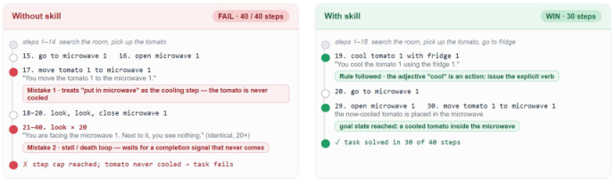

Reason Wide, Not Deep: Amortizing the Reasoning Premium into Distilled Skills (Microsoft)
Paper: "Reason Wide, Not Deep: Amortizing the Reasoning Premium into Distilled Skills" (arXiv 2608.07885, COLM 2026 Efficient Reasoning Workshop). Authors: Agamdeep Singh, Srishti Gautam, Priyanshu Gupta, Nikita Mehrotra, Tanmay Bakshi, Sumit Gulwani (Microsoft, per the announcement thread; Gulwani leads MSR's PROSE group).
TL;DR
- Reasoning modes beat non-reasoning modes on multi-step agentic tasks but charge a 3–6× output-token premium on every episode — and much of that spend re-derives procedures shared across episodes of the same domain. This paper amortizes the recurring cost: pay for the derivation once, offline, and cache it as text.
- The method ("passive skill distillation") is deliberately minimal: point a coding agent (Claude Code with Claude Sonnet 5) at a directory of 35–50 existing trajectories and a fixed instruction; it compiles a 40–130-line natural-language skill that gets appended verbatim to the non-reasoning model's system prompt. One-time cost: \(1.28–\)2.44 per domain.
- For GPT-5.4-mini across ALFWorld, τ²-bench telecom/retail, and SpreadsheetBench-Verified, skills recover 55%–100%+ of the reasoning gap on held-out tasks — beating the reasoning mode outright on ALFWorld (0.787 vs 0.713) and τ²-retail (0.408 vs 0.350) — while emitting 2.9–4.5× fewer output tokens and zero reasoning tokens.
Why this matters
Every team running agents in production faces the same pricing question: reasoning mode is measurably better on multi-step tasks, but you pay the thinking tax on every single episode, forever. This paper's framing of that tax is the sharpest I've seen: test-time reasoning is deep search inside a single episode, re-paid at every deployment, while distilling a skill from a trajectory corpus is wide search across episodes, paid once. The empirical claim is that the two recover largely overlapping procedural knowledge — the reasoning model keeps re-deriving "in ALFWorld, cool X requires an explicit fridge interaction" from scratch, episode after episode, when a one-time corpus analysis could have written it down.
For this tracker's interests the result cuts two ways. It's a clean, near-free win for context-space distillation — no weights touched, no RL, no teacher API bills, and the skill lives in a cacheable system-prompt prefix so marginal deployment cost is ~nil. And it's a quiet argument about where capability should live in an agentic system: a growing fraction of what we call "reasoning ability" on agentic benchmarks is recoverable as ~100 lines of markdown, which says the benchmarks are dominated by domain conventions rather than genuine per-instance inference. The residual gap on τ²-telecom and SpreadsheetBench is then the interesting part — that's the measurement of where deep, per-instance search actually earns its premium.
The core idea
A model \(M\) exposes a reasoning mode \(M_r\) (private reasoning tokens before each action) and a non-reasoning mode \(M_{nr}\) (actions only). A benchmark supplies disjoint task splits \(\mathcal{T} = \mathcal{T}_{\text{train}} \cup \mathcal{T}_{\text{test}}\), an environment loop, and terminal rewards. The input to distillation is a trajectory corpus \(\mathcal{D}\) collected once on \(\mathcal{T}_{\text{train}}\) — ordinary evaluation rollouts (per-step observations, actions, tool calls, rewards) that in practice often already exist. Skill compilation is a single agent call:
where \(A\) is an off-the-shelf coding agent with file-system and code-execution tools, \(P\) is a fixed natural-language instruction, and \(\sigma\) is the resulting skill. Deployment is pure concatenation — the non-reasoning model runs with the skill appended to its system prompt:
(Notation as in the paper's setup section; the two displays are compiled from its inline definitions.) Nothing else changes: same harness, same decoding, same tools. The bet is that the skill recovers the reasoning premium
at a token cost that amortizes to zero. (This last display is my reconstruction of the paper's "reasoning gap" quantity.)
How it works
The pipeline has exactly three steps and no iteration:
PASSIVE SKILL DISTILLATION (once per model x domain, ~$1-3)
1. D <- existing rollouts on T_train # 35-50 tasks/domain
(paired condition: think + no-think trajectories
no-think-only condition: no-think trajectories alone)
2. open coding agent A in the directory holding D # Claude Code + Sonnet 5
3. A executes fixed instruction P:
4. compute win/loss contrasts across trajectories
5. tabulate failure-mode frequencies, action n-grams,
mode-level pass rates (no environment access)
6. compile findings -> skill sigma:
40-130 lines of markdown rules,
each traceable to corpus evidence
7. return sigma
DEPLOYMENT (every episode, marginal cost ~0)
8. run M_nr with system prompt sys ⊕ sigma # cacheable prefix
9. no harness / decoding / tool changes
Three design choices carry the result. First, the distiller is an agent, not a prompt: it greps, counts, and diffs the corpus with code, so the skill's claims ("stall loops occur in 28.7% of failures") are grounded in computed statistics rather than an LLM's impression of the data. Second, the distiller has no environment access — it cannot try things, only read; this is what makes the method "passive" and the cost one-shot. Third, the skill is evidence-traceable markdown, not soft prompts or weights, so you can read exactly what was learned and audit it.
The trajectory-level mechanics are vivid in the ALFWorld example (Figure 2 below). On "put a cool tomato in microwave," the plain non-reasoning model puts the tomato in the microwave without cooling it — it treats the adjective cool as a property, not a required action — then issues look twenty times waiting for a completion signal, exhausting its 40-step budget. The skill contributes precisely two rules: adjectives like cool must be realized via an explicit cool X with fridge action, and repeated no-op observations mean break the loop. Same model, same task: cools at step 19, finishes in 30 steps. These fixes generalize — missed-transform failures drop from 35.9% of transform tasks to 11.5%, stall loops from 28.7% to 5.3%.

Figure 2 from the paper: the same non-reasoning model failing (top) and succeeding (bottom) on a held-out ALFWorld task, where the distilled skill supplies the two missing domain rules.Results
Held-out success (3 seeds) and mean output tokens per episode, GPT-5.4-mini (Table 1):
| Benchmark | think | no-think | no-think + skill | tokens (think → +skill) |
|---|---|---|---|---|
| ALFWorld | 0.713 | 0.567 | 0.787 | 3,723 → 832 (4.5×) |
| SSB-Verified | 0.613 | 0.447 | 0.560 | 3,291 → 831 (4.0×) |
| τ²-telecom | 0.450 | 0.192 | 0.333 | 2,143 → 597 (3.6×) |
| τ²-retail | 0.350 | 0.325 | 0.408 | 1,615 → 565 (2.9×) |
The reasoning gaps being recovered are +14.6, +16.6, +25.8, and +2.5 points respectively; the skill recovers 55%–100%+ of each. On ALFWorld the skill even undercuts plain no-think in tokens (832 vs 952) — fewer flailing retries means shorter episodes (21.8 vs 27.0 turns). The Qwen3.6-27B replication with Qwen-specific skills helps on three of four benchmarks, hitting a near-ceiling 0.980 on ALFWorld and 0.673 on SSB-Verified.
Two findings deserve emphasis. Beating the teacher isn't paradoxical: a rule aggregated over 50 training episodes is more reliable than a derivation the reasoning model must reproduce correctly every episode — the reasoning model itself occasionally falls into the ALFWorld appliance-door loop the skill forbids. And reasoning traces are not a prerequisite: skills distilled from no-think trajectories alone stay competitive with skills from paired think/no-think corpora, with domain-dependent differences. You don't need to see the deep search to compile the wide one.
How it connects
- SkillRise: Curriculum Task Sequences for Transferable Agent Skills (tracked, tutorial) — the RL-trained sibling: there the agent itself curates an evolving skill document across a task curriculum with cross-task credit assignment; here a separate offline agent compiles the document in one pass. Same artifact (natural-language skill), opposite acquisition regimes.
- Agent Memory Distillation (tracked, tutorial today) — also compiles teacher trajectories into prompt-injected text for a cheaper executor, but hierarchically (workflow/subtask/function) with per-task retrieval, versus this paper's single static skill per domain.
- ReasoningBank Code Release (tracked today) — reasoning-as-memory accumulated online from the agent's own successes and failures; passive skill distillation is the offline, batch counterpart with an external analyst.
- Harness Delta Attribution (tracked today) — directly relevant methodology: a skill in the system prompt is a harness delta, and that work's question (generalizable improvement vs. overfitting vs. extra compute) is exactly why the held-out-split and token-count reporting here matter.
- Survey: On-Policy Distillation for LLMs (tracked) — situates this as the extreme context-space end of the distillation spectrum: no gradients, no logits, just text.
Critical take
The held-out discipline within a benchmark is good, but 50 training tasks per domain and one skill per model×domain pair is domain distillation, not general capability transfer — τ²-telecom's residual gap (0.333 vs 0.450) shows the ceiling when tasks are heterogeneous per-instance. The comparison is also mildly stacked in skills' favor on cost: it counts output tokens but not the (admittedly cacheable) prompt growth, and the corpus "often already exists" assumption is doing some work for the $1–3 headline. The deeper question the paper raises but doesn't answer: skills were compiled by a stronger reasoning agent (Sonnet 5) than the deployment model — how much of the gain is corpus statistics versus the compiler's own priors about ALFWorld-style environments? (The no-think-only ablation partially addresses this, since the corpus then contains no reasoning, but the compiler still reasons.) And an obvious next step the search-lens framing invites: interleave the two — spend the reasoning premium only on episodes the skill flags as out-of-distribution. That routing policy is where the accuracy–token frontier actually lives.
If you remember three things
- The reasoning premium is largely re-derivation — on four agentic benchmarks, 55–100%+ of the think/no-think gap is recoverable as ~100 lines of markdown compiled once from 35–50 old trajectories for ~$2.
- Wide beats deep when knowledge is shared across episodes: corpus-level search paid once can beat episode-level search paid always — GPT-5.4-mini + skill outperforms its own reasoning mode on ALFWorld and τ²-retail at 2.9–4.5× fewer tokens.
- You don't need reasoning traces to distill reasoning's benefits — skills from non-reasoning trajectories alone are competitive, which means the procedural knowledge was in the outcomes, not the hidden chain of thought.